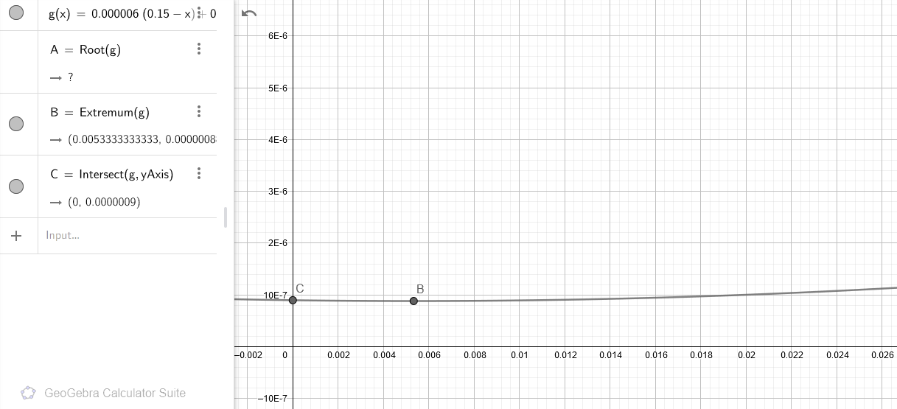
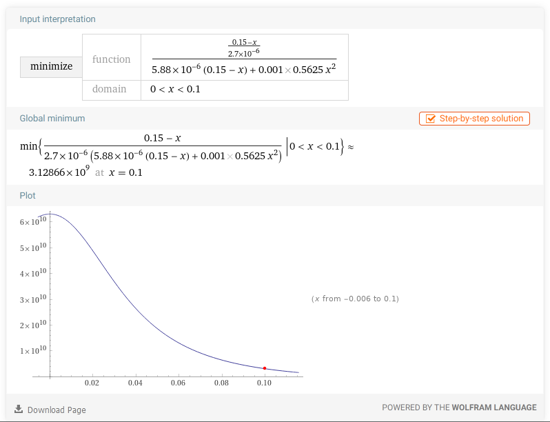

OBLIGATORY NOTE 1: Do NOT use this blog post as a reliable source. This is not a research paper. This web page should NEVER be referenced. If an academic work has referenced this page, it is invalid. I was bored one Friday and thought I'd have some fun writing this (and it wasn't even fun). This is just for casual reading. My calculations might be off by beyond 100%. There is more to life than this blog post. Seek help.
NON-OBLIGATORY NOTE: If you find a mistake in my maths, please correct me by either opening a PR on Github or e-mailing me the correct maths. Thanks in advance.
So, while taking notes in my math course, I noticed that my pencil had become really short and it was starting to get uncomfortable to write. I had actually began (unknowingly) to increase the size of the letters, numbers, equations and matrices I was writing down, since the pencil now required much more effort to control in tiny areas. "This will start costing me a lot of paper." I thought, and I decided to change my pencil. But then, I stopped and thought about it again. "But this pencil still has quite a lot of graphite left in it, I wouldn't want to waste it."
Got the basic idea behind my dilemma?
Of course the paper I'm using is not purely made out of wood, and neither is the pencil. However, I don't think it'd be a terrible assumption if we just imagined they were, for sake of simplifying the question. I think my biggest error in this assumption is ignoring the graphite, which makes up quite a big portion of the pencil (and also the actual functional part of it). But, let's stop thinking about everything else and think in terms of trees required for manufacturing paper and pencil.
Another assumption I'm going to make is that I can use the pencil until there is only 10% pencil left. I won't be able to sharpen the pencil anymore after that point.
Yet another assumption is that I'll be using 90% of a page for writing, and of that 90%, only 30% of it will be actually painted by the graphite. I don't know how accurate this is to my real world wiriting, but hey, let's go with it until we come up with a mathematical function.
I don't have the numbers, but let's say this particular model of pencil has to spend A meters of graphite to draw a line that is 1 meters long and 0.0001 meters thick (Of course the exact thickness depends on how pointy the writing end of the pencil is, but let's assume I'm a perfectionist in this matter). Unit of meters may be inconvenient here, but trust me, it eliminates unit conversions so it's worth it. The paper I'm writing on is nearly the size of an A4, which, according to Wikipedia (https://en.wikipedia.org/wiki/ISO_216#A_series), has an area of 0.0625 m2. The 30% of the 90% of this area (which is assumed as the total area painted by graphite) is 0.016875 m2. To paint this much area, I'll have to use (A * 0.016875) / (1 * 0.0001) meters of pencil to write one paper. In this equation, A is a constant, so my writing efficiency is constant. So, to represent my own efficiency variation in using the available area, let's introduce another variable - packing efficiency (Pe). This is how small I can write my stuff, and it's a function of pencil length. I haven't done experiments or observations, but just to come up with a theoretical mathematical model, let's say it's a simple relationship such as
Pe(l) = (L - l) / L while l < L * 0.9
In the equation, L is the starting length of the pencil and l is the amount I've used. Let's take L as 0.15 m. Then, the function becomes Pe(l) = (0.15 - l)/0.15 while l < 0.135 m. I'll stick this into the previous function.
(Pe(l) * 0.016875 * A / 0.0001) is now the amount of pencil used per page. Let's do a trick and say that Pe(l) * 0.016875 is the amount of area I can use per page, represented by available area variable Aa.
To get the tree efficiency, we need another value - how much tree is required to make one pencil and one A4 paper. Let's say we need x for a pencil and y for half a paper (so a single page).
It is time to find the wasted tree. I spend Pe(l) * A * 0.016875 / 0.0001 m of pencil per page of writing, as we already calculated. However, all the tree used in this way is "useful use", so none of this goes to waste. The only part of the tree that will go to waste will be the in the remaining part of the pencil after we stop using it. That is represented by (0.15 - l) * x.
The tree usage due to paper spending is y per page. We will lose efficiency in paper use since we Aa will drop, but we can't say the entirety of unpainted paper is wasted. You need to have a white background to make sense of the black writing after all. So, let's say the area we COULD use but DID NOT is the wasted amount. This is 0.016875 - Aa, or 0.016875 - Pe(l) * 0.016875.
Wasted paper area will add up as we keep writing, but pencil waste will happen once when we stop using the pencil. The total waste becomes:
x * (0.15 - l_final) + y * integral_from_0_to_l_final(0.016875 - Pe(l) * 0.016875)
=> x * (0.15 - l_final) + y * integral_from_0_to_l_final(0.016875 - ((0.15 - l) / 0.15) * 0.016875)
=> x * (0.15 - l_final) + y * 0.5625 * l_final^2
Since x and y are constants, this total waste during the lifetime of a pencil is just a function of l. Let's find the minimum of this function to see when we should stop using the pencil.
Oh wait. I might need values for x and y if that is the case. Let me look them up on the internet.
If we are to trust these sources;
x = 1/170000 = 5.88*10^-6 = 0.00000588 tree/pencil
y = 0.002 tree/sheet = 0.001 tree/page
The total tree waste function is: 0.00000588 * (0.15 - l_final) + 0.001 * 0.5625 * l_final^2
It's time to plot.

It is expected that the total waste would be minimum during the lifetime of a pencil if we just nearly immediately stopped using the pencil, but then the total waste per writing length increases.
Let's have infinite pencils which we always stop using at l_final and try to have the lowest tree waste rate in that case, with 0 < l_final < 0.9 * L
We will be able to draw for length of ((0.15 - l_final) / A) per pencil, and each pencil will waste (0.00000588 * (0.15 - l_final) + 0.001 * 0.5625 * l_final^2) much trees. So, by combining the two;
((0.15 - l_final) / A) / (0.00000588 * (0.15 - l_final) + 0.001 * 0.5625 * l_final^2) trees per length of writing. To plot this, let's get a value for A.
Eww, imperial units! 35 miles makes about 56000 meters. So, A is 0.15/56000 = 0.0000027. Good. Let's get the final function.
((0.15 - l_final) / 0.0000027) / (0.00000588 * (0.15 - l_final) + 0.001 * 0.5625 * l_final^2)

Ha! Who would've guessed? I'm keeping my pencil until I can no longer write with it!
But of course, do take this result and the function with an entire silo of salt. My efficiency function is completely made up. It is the concept, the idea I really wanted to talk about.
arda-guler, 2021 - 2023. All Rights Reserved.